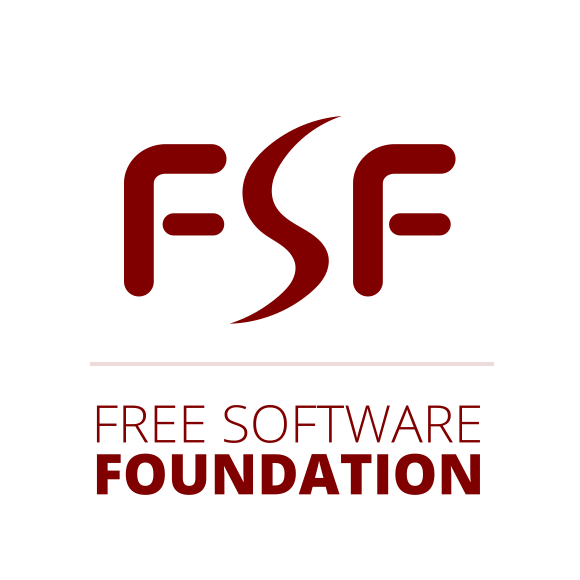

In the name of
GOD

Present to you by:
Soroush Afzalian
SoroushShringWhat is Operating System?
A Unix-like "Operating System" is a software collection of:
✅ Applications
✅ Libraries
✅ Developer Tools
✅ Kernel
Kernel is a program to allocate resources and talk to the hardware.
What is GNU?
GNU's Not Unix
Is a project to provide a complete Unix-like Operating System
which is entirely based on FreeSoftware.

What is Free Sofware?
Free Software
Is a matter of the users freedom to run, copy, distribute, study, change and improve the software.
What is Linux?
Linux Is a kernel for GNU Operating-System, released in 1991 and licensed under GNU GPL later.
What is GNU/Linux?
GNU/Linux Is a term for a GNU
Operating-System which uses Linux as it's kernel!
What is a Distribution?
A GNU/Linux Distribution (Distro)
Is a collection of mostly Free software available for install or live run, plus a repository of other software packaged to be installed on system.